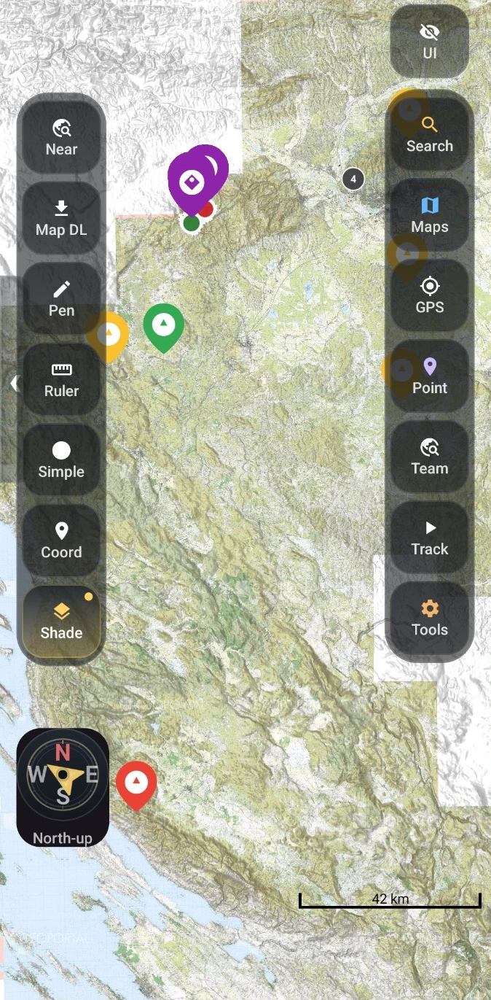
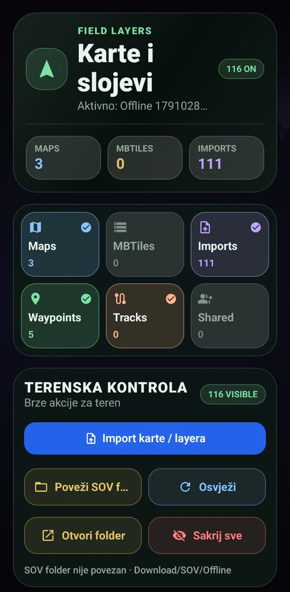
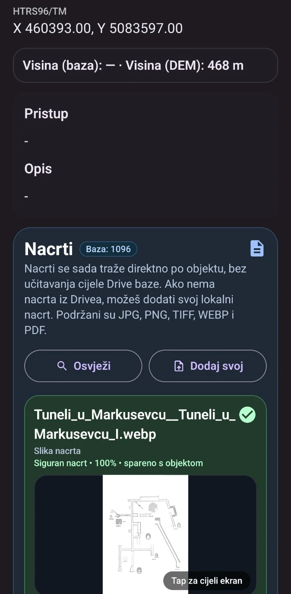
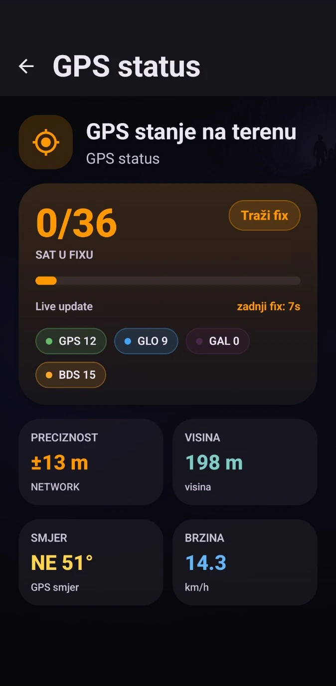

Object databases
Bring records, coordinates and survey drawings together. Connect cloud-backed member workflows with data available on the device.
CUSTOM ANDROID APPLICATION / SOV
A purpose-built Android application bringing object databases, offline maps, GPS navigation, terrain elevation and survey documents into one field workspace.

BUILT AROUND THE FIELDWORK
Bring records, coordinates and survey drawings together. Connect cloud-backed member workflows with data available on the device.
Manage map layers, offline coverage and MBTiles. Use digital elevation models (DEM) for terrain heights and relief context.
Locate objects, work with waypoints and record tracks. Inspect satellite status, reported accuracy, heading and altitude.
Find drawings by object through Google Drive or add local documents. Drawing formats include JPG, PNG, TIFF, WebP and PDF.
ACTUAL APPLICATION SCREENS



THE ENGINEERING BEHIND IT
Kotlin, Jetpack Compose and osmdroid support the Android experience. Supabase-backed databases and member roles connect the wider SOV system; local data and offline maps support field use.
A separate product in the same ecosystem: Explore SOV Web →